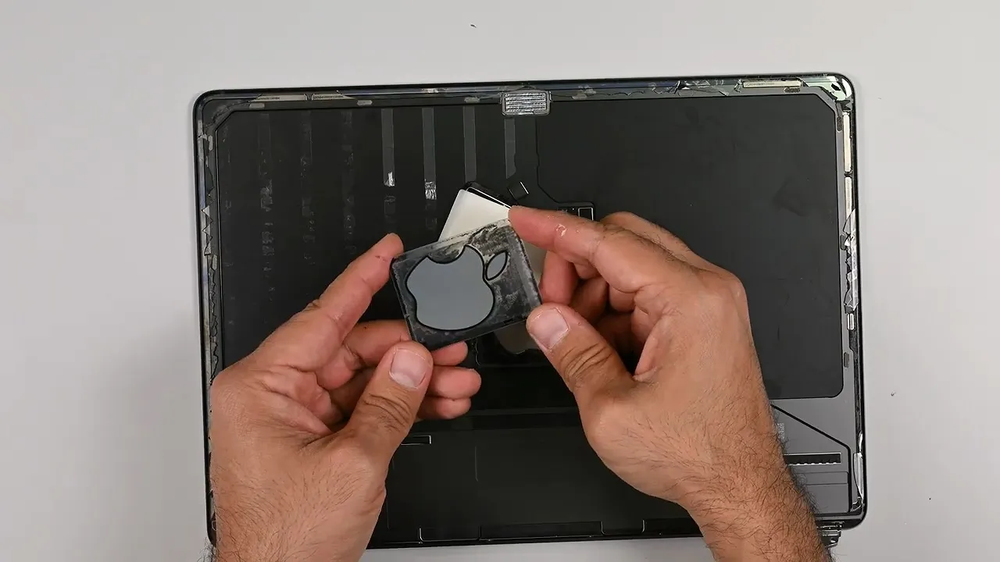
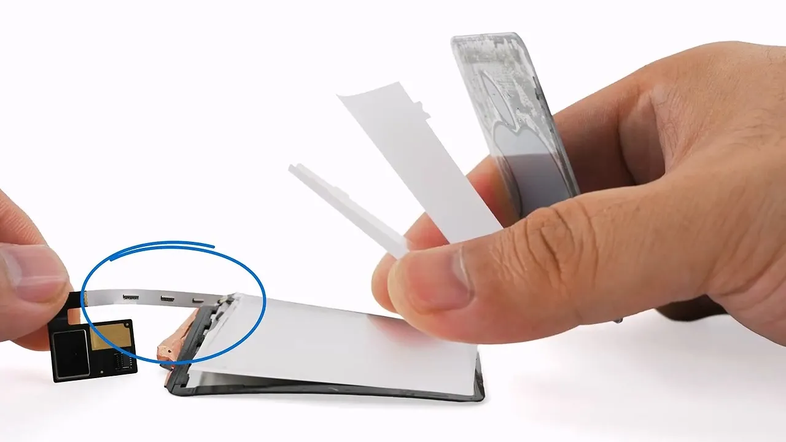
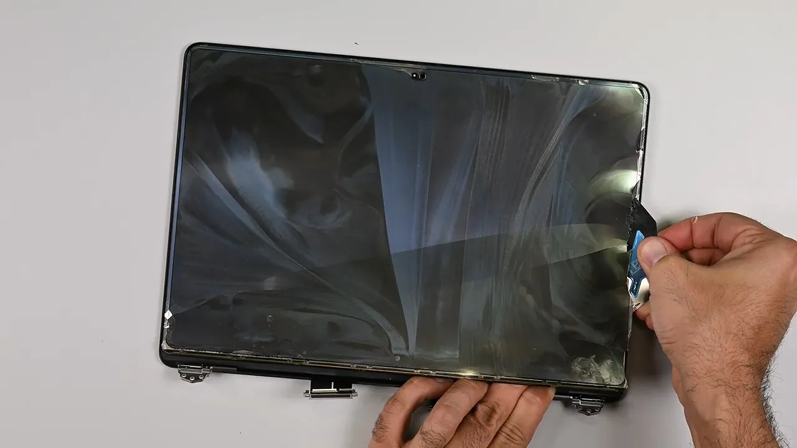

일단 이번작에 추가된 발광 애플로고의 경우 모니터 투과식이 아닌 별도의 led구조가 장착되어있음
그런데 저게 고장나면?

모니터패널에 접착되어있어서 패널분리 하지않고서는 수리가 불가능함

문제는 각종 it제품 분해에 도가 텄다는 iFixit 테크니션도 저 구조 확인을 위해 패널 분리하다가 OLED 패널이 파손됬음. 한마디로 사과에 불들어오는 기능이 고장나면 수리불가라고 보면될듯
다행히도(?) 썬더볼트/C포트 쪽과 쿨링팬은 교체수리가 가능했음. 그리고 기존에 부품 페어링 횟수 제한 이라는 애플 스러운 수리제한 기능은 일단은 없는걸로 보임.
대신 위에 말한거빼고는 전부 온보드로 숄더링되어있어서 하나라도 고장나면 메인보드 통갈이 해야하는건 변하지 않았음
한줄요약 : 애플로고 LED가 고장났음? 참고쓰던가 고칠거면 패널전체 리퍼비용이 발생하니까 참고하도록. 애플은 원래 저런감성으로 쓰는거잖아
요즘 뭐 솔더링 안된게 있나